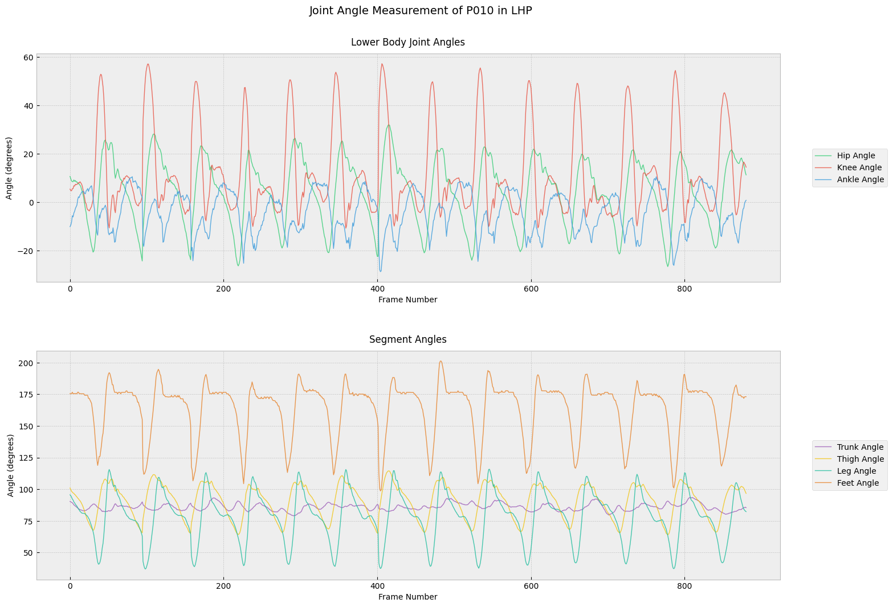

Gait analysis through computer vision and biomechanics
For my bachelor’s thesis, I built a program that measures movement from walking videos. It uses OpenCV and body geometry to calculate joint angles, without a pose-estimation library.
The problem
Measure walking movement from video.
My contribution
I built the OpenCV video-processing pipeline for our bachelor’s thesis.
Result
Joint and segment angles, with walking-cycle analysis.
What I learned
Working directly with geometry connected programming with biomechanics.

My contribution
I built the video-processing pipeline for our treadmill-based gait-analysis system. Rather than using a pose-estimation library, I worked directly with OpenCV, marker detection and geometric calculations to turn video into biomechanical measurements.
From motion to measurement
The pipeline detects contours and extracts key points frame by frame, then uses segment geometry to calculate hip, knee and ankle joint angles alongside trunk, thigh, leg and foot segment angles. Missing observations are interpolated, and gait cycles are normalized for comparison across stance and swing phases.
Part of a wider system
The completed team project combined camera-based kinematics with six MPU motion sensors and eight force-sensitive resistors. The GitHub repository represents the video-analysis portion of that work. The MPU and FSR components belong to the broader project documented in the thesis.
Study context
The exploratory study included 15 normal subjects and three participants with knee osteoarthritis. The report describes reduced knee flexion in the osteoarthritis group. This small cohort provides a context for the engineering work rather than a clinical validation claim.
Why this project matters to me
This was my first major project: a chance to bring programming and biomechanics together in a complete measurement pipeline. It remains an important starting point for my interest in learning from human movement and health data.
Selected technical notess
▤What the thesis actually compared
The video-processing system was applied to 15 normal subjects and three participants with knee osteoarthritis. The thesis then presents a detailed gait-phase comparison for one selected participant from each group, rather than a population-level estimate.
That example shows a marked difference in knee flexion during swing. It illustrates how the pipeline can expose movement differences, but it is not used here as an accuracy claim or as evidence that the system diagnoses osteoarthritis.
The repository adds cycle normalization, missing-frame interpolation and phase-based summaries to the video workflow. The full thesis includes the MPU and FSR hardware branches that are absent from the repository.
Source: bachelor’s thesis, Chapter 4 and code appendices; gait-analysis repository notebooks.
Why build without pose estimation?
I used OpenCV and marker geometry directly. This made the link between detected points and biomechanical angles explicit, with the practical need to handle missing observations.